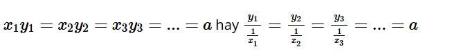

📘 Bài 23: Đại lượng tỉ lệ nghịch
📖 1. Đại lượng tỉ lệ nghịch
• Nếu đại lượng y liên hệ với đại lượng x theo công thức:
y = a/x (a là một hằng số khác 0)
thì ta nói y tỉ lệ nghịch với x theo hệ số tỉ lệ a.
🧠 Chú ý
• Nếu y tỉ lệ nghịch với x theo hệ số tỉ lệ a thì x cũng tỉ lệ nghịch với y theo hệ số tỉ lệ a.
• Khi đó ta nói hai đại lượng x và y tỉ lệ nghịch với nhau.
📊 Nhận xét
• Nếu hai đại lượng y và x tỉ lệ nghịch với nhau thì:
+ Tích hai giá trị tương ứng của chúng luôn không đổi (và bằng hệ số tỉ lệ).

+ Tỉ số hai giá trị bất kì của đại lượng này bằng nghịch đảo của tỉ số hai giá trị tương ứng của đại lượng kia.

📖 2. Một số bài toán về đại lượng tỉ lệ nghịch
• Để giải toán về đại lượng tỉ lệ nghịch, ta cần nhận biết được hai đại lượng tỉ lệ nghịch trong bài toán.
• Từ đó ta có thể lập các tỉ số bằng nhau và dựa vào tính chất của dãy tỉ số bằng nhau để tìm các yếu tố chưa biết.